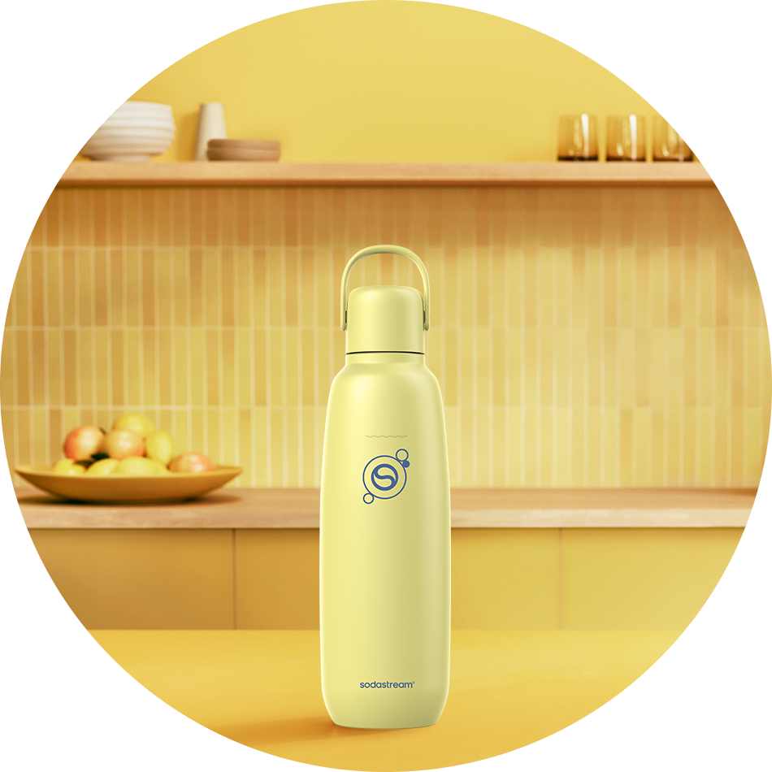
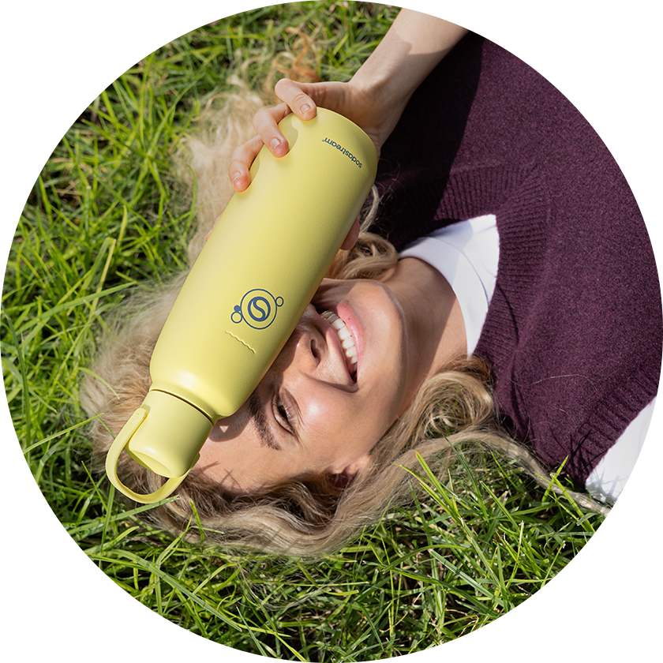
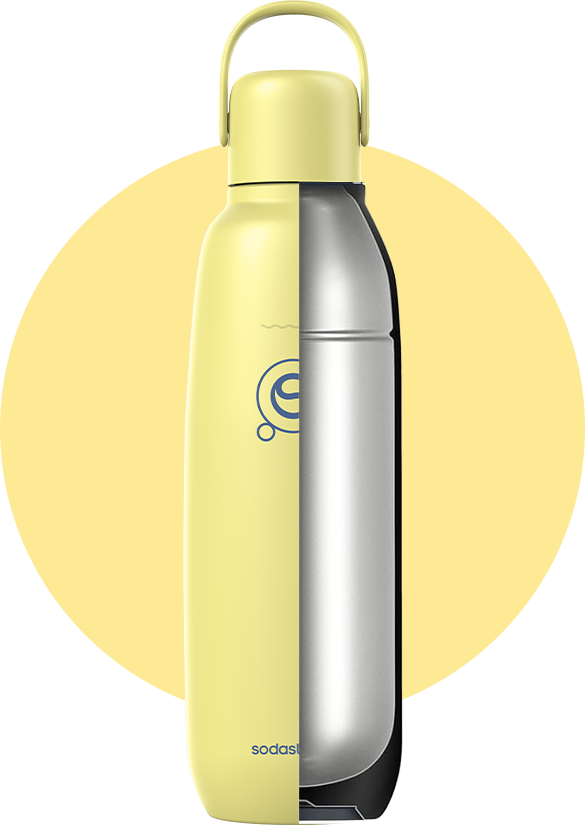
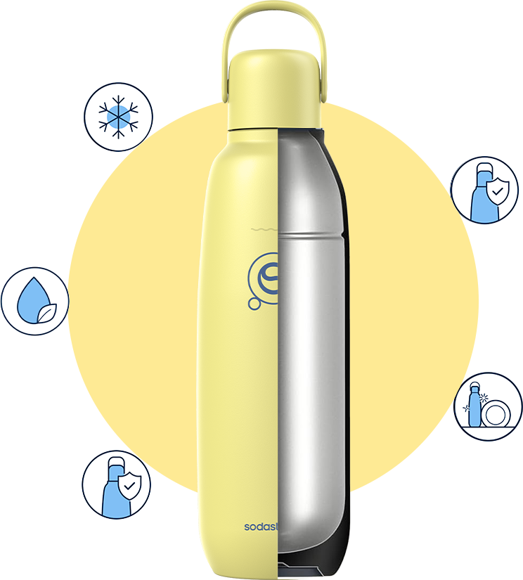
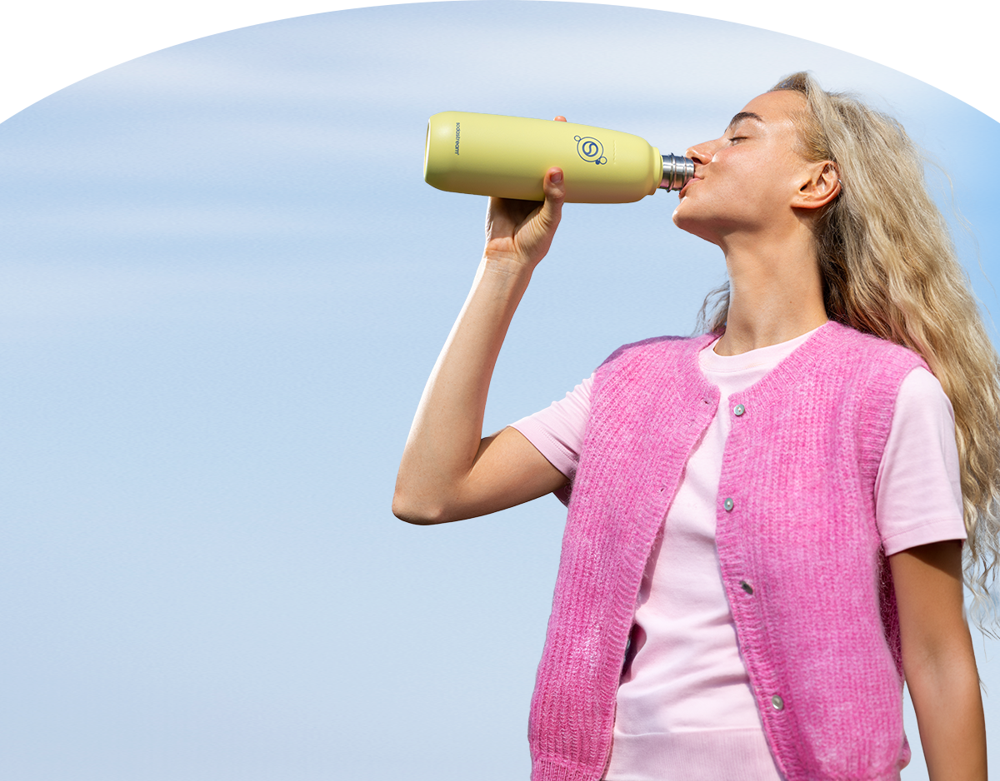
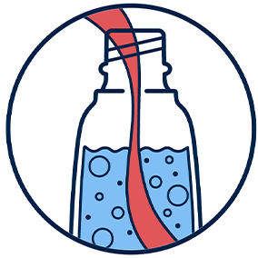
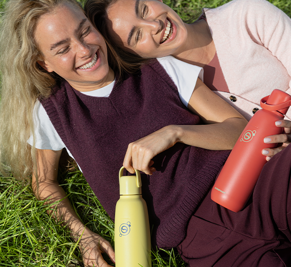
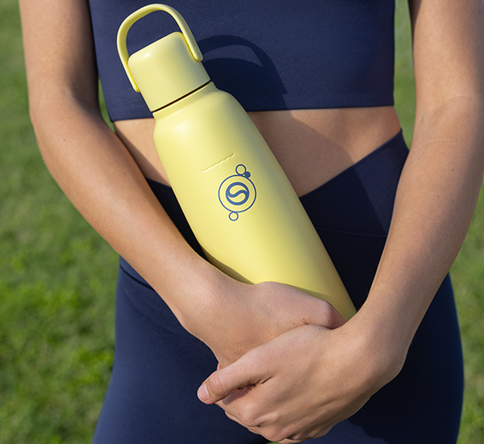

fizz & go™ easy mix
butelka termiczna
do gazowania wody,
żółta, 0,9 l
idelanie schłodzone napoje nawet do
12h
idelanie schłodzone napoje nawet do
12h

złap ulubione bąbelki do termicznej butelki i zabierz je ze sobą!
Sięgnij po Sodastream fizz & go™ – rewolucyjną butelkę do gazowania wody, w której bąbelki pozostaną idealnie chłodne nawet do 12 godzin. To wielofunkcyjne rozwiązanie 3 w 1, które łączy w sobie funkcjonalność butelki do saturatora, bidonu na wodę oraz kubka termicznego, a przy tym zachwyca stylowym designem w pastelowym kolorze. Ciesz się praktycznym rozwiązaniem, które nadąża za Twoim tempem i wspiera Cię przez cały dzień!

Twój kolor:
żółty
To odcień, w którym dobra energia spotyka się z wyrazistym stylem i odwagą do wyrażania siebie. To kolor idealny dla optymistów i dla tych, którzy chcą wprowadzić trochę słońca do swojej codzienności, nawet w pochmurny dzień.
funkcjonalny design, który współgra razem z Tobą
Poznaj butelkę do zadań specjalnych! Sodastream fizz & go jest odporna na uszkodzenia i korozję, a przy tym niezwykle szczelna — nie musisz się więc obawiać, że Twój napój straci bąbelki. Dodatkowo można ją bezpiecznie myć w zmywarce, co zapewnia maksymalną wygodę użytkowania. Czeka Cię cały dzień poza domem? Butelka zadba o to, by Twój napój pozostał przyjemnie chłodny nawet przez 12 godzin!


Idealnie schłodzone
napoje do
12
godzin
Szczelny korek
i hermetyczna
konstrukcja
Materiał
bez BPA
Dostosowana do
mycia w zmywarce
Wytrzymała stal
nierdzewna 18/8
Idealnie schłodzone napoje do 12 godzin
Szczelny korek i hermetyczna konstrukcja
Materiał bez BPA
Dostosowana do mycia w zmywarce
Wytrzymała stal nierdzewna 18/8
świadomy wybór
na co dzień
Pozytywna zmiana może zacząć się właśnie od Ciebie. Czasem wystarczy jeden świadomy wybór, by zrobić
realną różnicę.
Zamiast sięgać po jednorazowe butelki i kubki, wybierz rozwiązanie, które zostaje z Tobą na dłużej.
Z Sodastream fizz & go zadbasz o codzienne nawodnienie, jednocześnie wspierając dobro naszej
planety. To
mały krok,
który prowadzi do wielkiej zmiany i bardziej świadomego stylu życia.

gazuj, miksuj, smakuj

Wlej wodę z kranu do butelki do Sodastream fizz & go™, a następnie zamontuj ją w saturatorze.

Aby uzyskać pożądany poziom bąbelków, kilka razy naciśnij przycisk gazowania.

Jeśli chcesz, dodaj ulubiony syrop Sodastream® lub inne dodatki. Lekko wstrząśnij i ciesz się smakiem!
Sodastream fizz & go ™ – dowiedz się więcej o butelce do zadań specjalnych

Z jakimi saturatorami można używać butelki Sodastream fizz & go™?
Saturatory Terra, Art, Mix, Duo i Ensō to modele, które są w pełni kompatybilne z wielorazową
butelką
Sodastream fizz & go.
Czy butelkę Sodastream fizz & go™ można myć w zmywarce?
Tak! Możesz bezpiecznie włożyć ją do zmywarki, by już po chwili cieszyć się idealną
czystością.
Czy do butelki Sodastream fizz & go™ można wlać ciepły napój?
Sodastream fizz & go to praktyczny bidon termiczny, w którym możesz przechowywać
zarówno zimne
jak
i ciepłe napoje, takie
jak kawa czy herbata*.
*UWAGA! Nie nasycaj gazem wody o temperaturze powyżej 45°C. Zachowaj szczególną ostrożność
podczas przechowywania
gorących płynów w butelce i otwierania butelki zawierającej gorące płyny.
Sodastream fizz & go ™ – pozytywny akcent każdego dnia
Aktywnie każdego dnia
Wybierasz się na wypad w góry, jogę, szybki spacer po pracy?
Sodastream
fizz & go™ sprawdzi się jako bidon lub termos,
który utrzymuje chłód napojów nawet do 12 godzin. To niezbędny kompan każdej
aktywności!
Wygoda, która ułatwia każdy dzień
Masz intensywne plany? Bez obaw. Szczelna
konstrukcja butelki pozwala włożyć ją do torby lub plecaka i ruszać dalej bez
stresu. A po całym dniu łatwo i sprawnie umyjesz ją w zmywarce.
Prezent, który zachwyca
Szukasz praktycznego upominku z charakterem?
Żółta butelka Sodastream
fizz & go ucieszy każdą obdarowaną osobę – łączy
wysoką funkcjonalność z designem, który przyciąga spojrzenia.
W drodze po dobre chwile
Jesteś w drodze do pracy, wyruszasz na weekendową wycieczkę lub
robisz szybkie zakupy? Butelka Sodastream fizz & go
mieści się w uchwycie samochodowym, dzięki czemu Twój ulubiony, napój
będziesz mieć zawsze pod
ręką – i
to w idealnej
temperaturze!

rozpocznij bąbelkową przygodę z syropami Sodastream®

smaki, do których zawsze chce się wracać
Sodastream® Pepsi®, 7UP®, Mirinda® czy MTN Dew® to smaki, które zna każdy. Zaserwuj je bliskim na rodzinnej imprezie lub podczas domówki z przyjaciółmi i spraw, że każdy znajdzie w szklance swój ulubiony napój.

klasyki, które zachwycają smakiem
Cola, Tonic czy Cytryna Limonka to ponadczasowe smaki, które nigdy się nie nudzą. W wersji solo są idealne gdy potrzebujesz chwili relaksu, a gdy dodasz do nich ulubione owoce, zioła lub przyprawy stają się gwiazdą każdej imprezy.

owocowe akcenty, które nastrajają pozytywnie
Owocowe lemoniady, przygotowane na bazie syropów Sodastream o smaku Marakui, Pomarańczy Mango lub Różowego Grejpfruta, to idealne orzeźwienie w ciągu dnia. Podawaj je solo lub z kostkami lodu i owocami i ciesz się słodkim smakiem, choć bez dodatku cukru!